好久沒有內用了 今天想要跟大家分享的是
朋友在疫情中開幕的新竹早午餐店
本來想要再開幕的時候馬上來吃
沒想到剛好是七月的時候開幕
期待了好幾個月好不容易疫情有點趨緩就趕快來吃
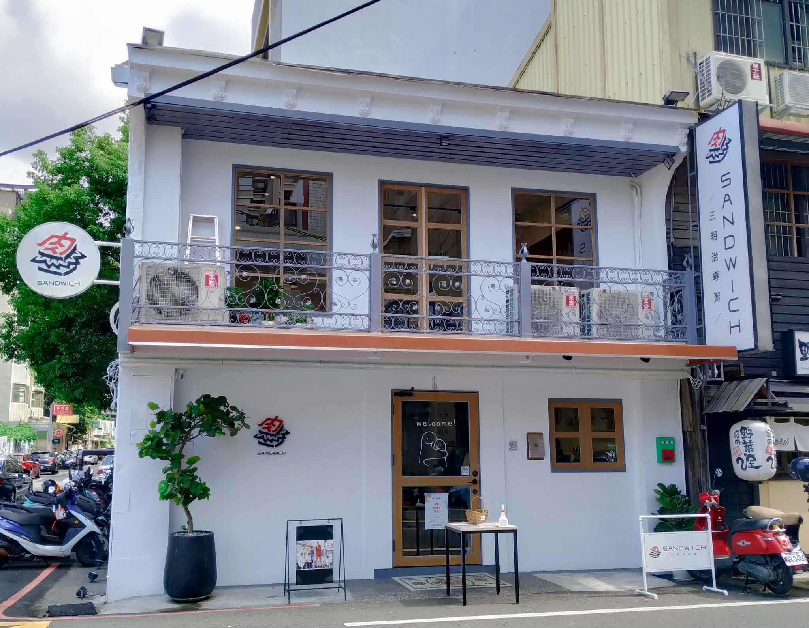
從火車站出發的話大概15分鐘左右會到
店門外很適合拍照唷
是以白色為基底的文青復古小洋樓🏠
但是天氣太熱了所以我們只有最後的大合照
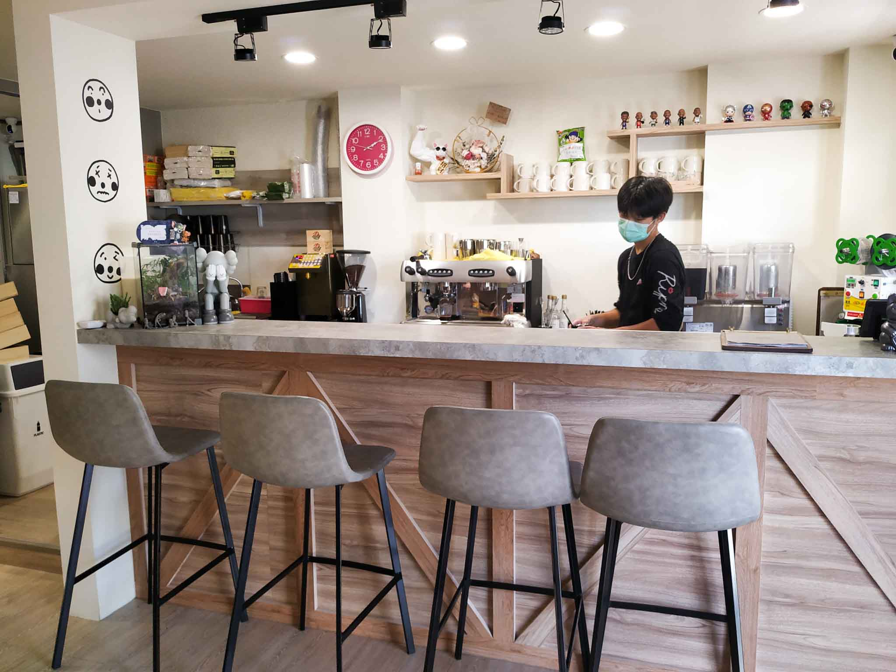
在外面實聯制之後呢 一進去右手邊是吧檯
這邊會有店員來招呼你
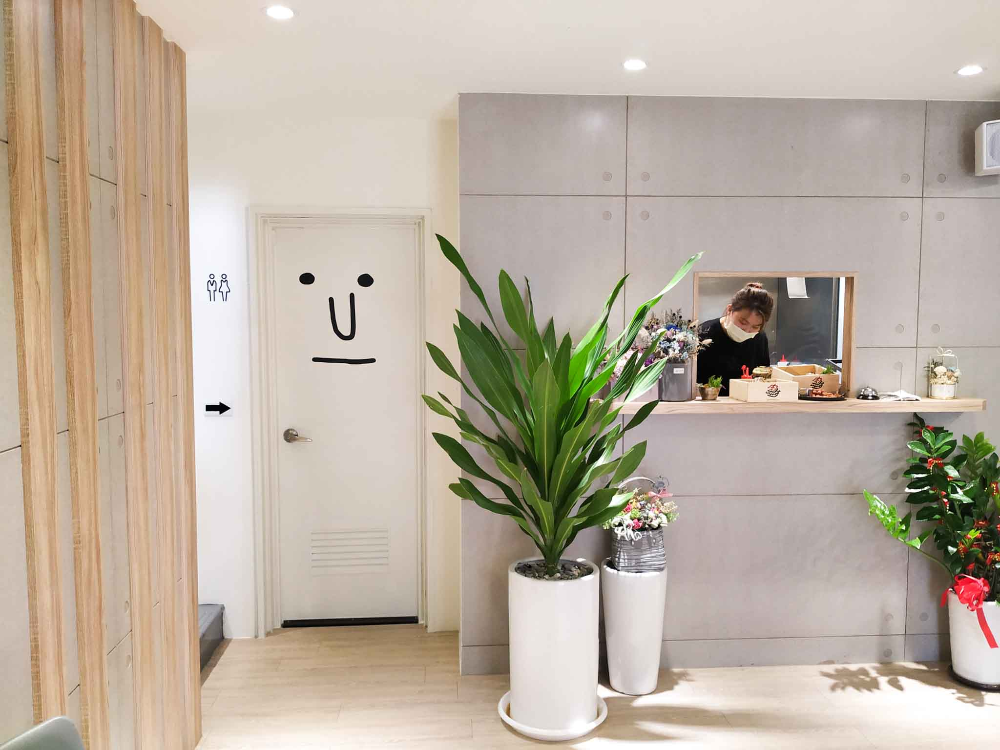
在往裡面看的話有個可愛的廚房出餐檯
大家要小心點完餐後要跟右邊的吧檯點餐 不是出餐檯唷
出餐檯旁邊就是廁所 門上面貼了一個可愛的臉
往左邊上樓便是我們的內用區啦
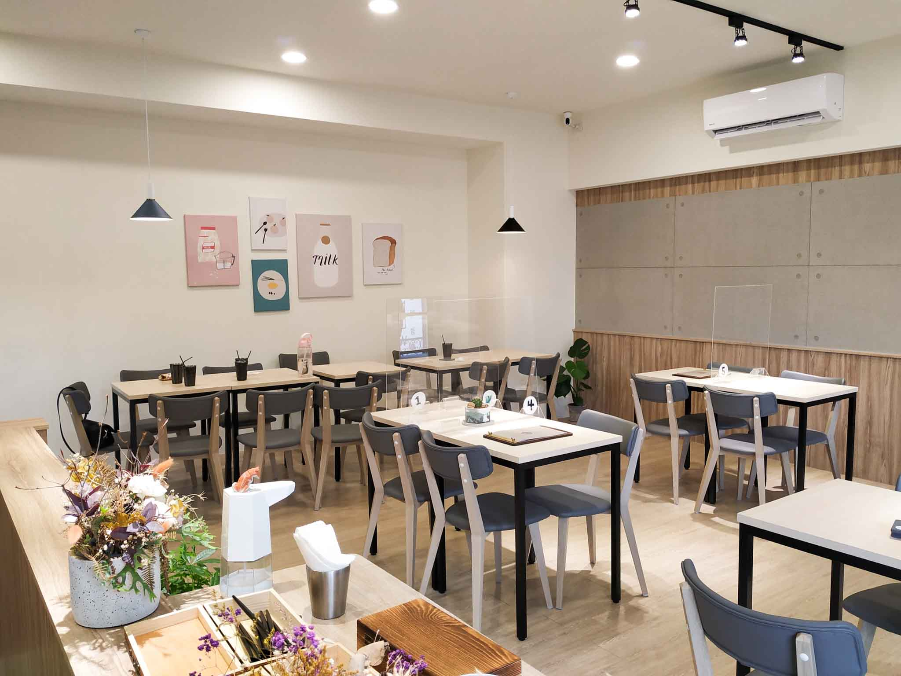
窗明几淨 牆上還有掛著可愛的話 拍照也蠻適合的唷
另外餐具跟面紙放在上樓後左邊的小桌
要記得自己拿唷
btw我覺得餐具蠻有質感的 黑色厚重金屬質地深得我心
菜單
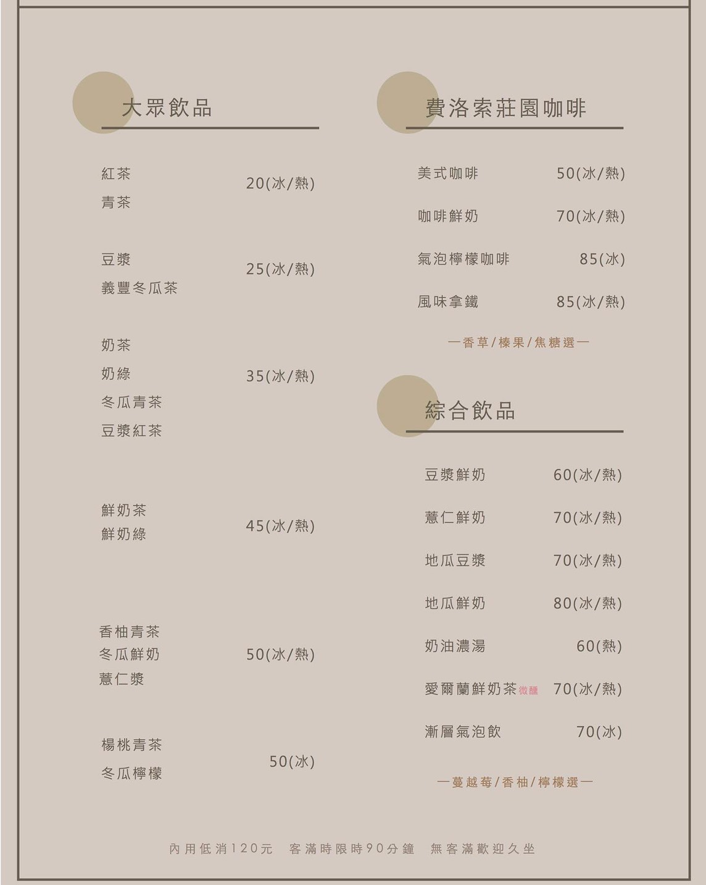
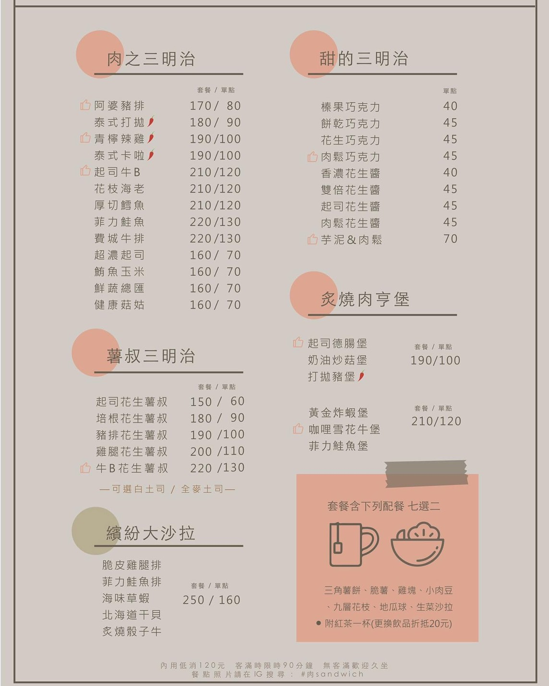
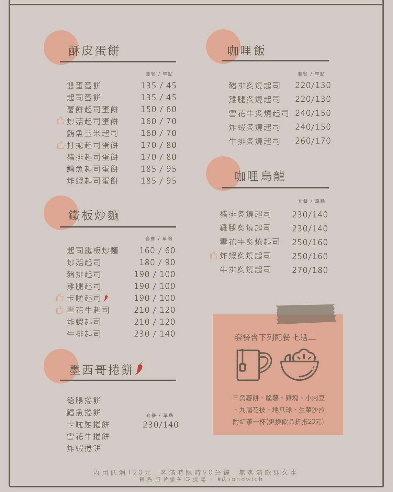
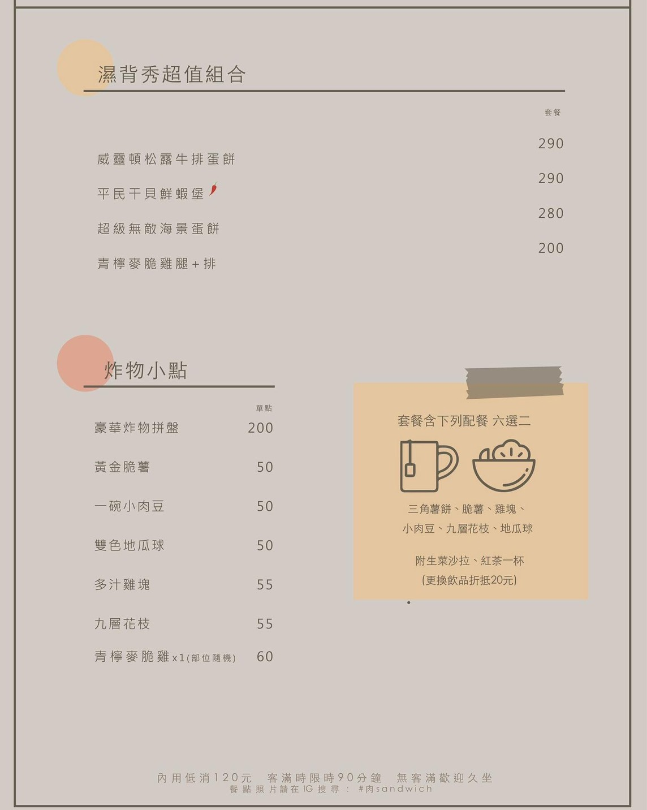
菜單有分套餐跟單點
套餐的話有配餐七選二＋紅茶一杯（可補價差升級
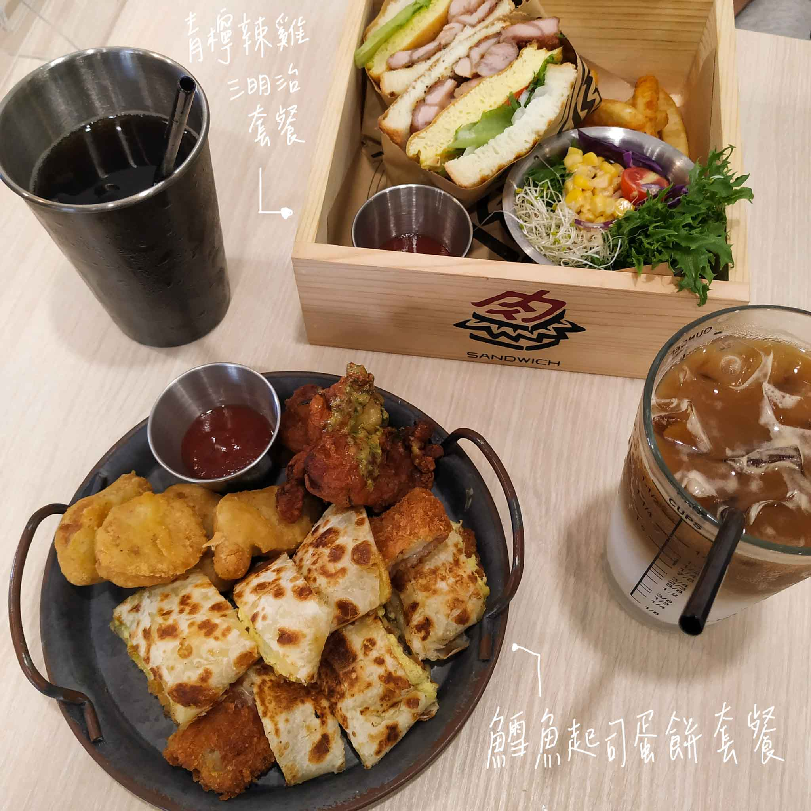
🌯鱈魚起司蛋餅 套餐 💰185
配上的是雞塊、九層花枝、紅茶（可調整甜度冰塊
蛋餅的外皮是酥脆的那種 像是脆皮蛋餅
鱈魚的部分也是這的酥脆酥脆的
再配上起司真的是快樂肥宅啊😂
鱈魚的部分我覺得給蠻多的
雞塊就是雞塊沒毛病
九層花枝是九層塔花枝丸唷
趁熱吃很好吃
🥪青檸辣雞三明治 套餐 💰190
配上脆薯🍟生菜沙拉🥗＆＋50升級咖啡鮮奶☕️
店名就叫做肉sandwich 當然一定要來個三明治啊
其實主要是看上這個裝三明治的木盒啦 真的好可愛
三明治都是親手包的唷（廢話
外面吐司的部分有塗過奶油再去烘烤
吃起來帶有吐司的柔嫩香氣 也同時擁有烤過的酥脆
裡面除了主角青檸辣雞之外
還有厚蛋、生菜、番茄、洋蔥
一種健康之感油然而生 咬下去更是大滿足
脆薯的話是比較大根的薯條
生菜沙拉則是由苜蓿芽、生菜、番茄、紫高麗菜、玉米
再加上特調醬汁所組成的
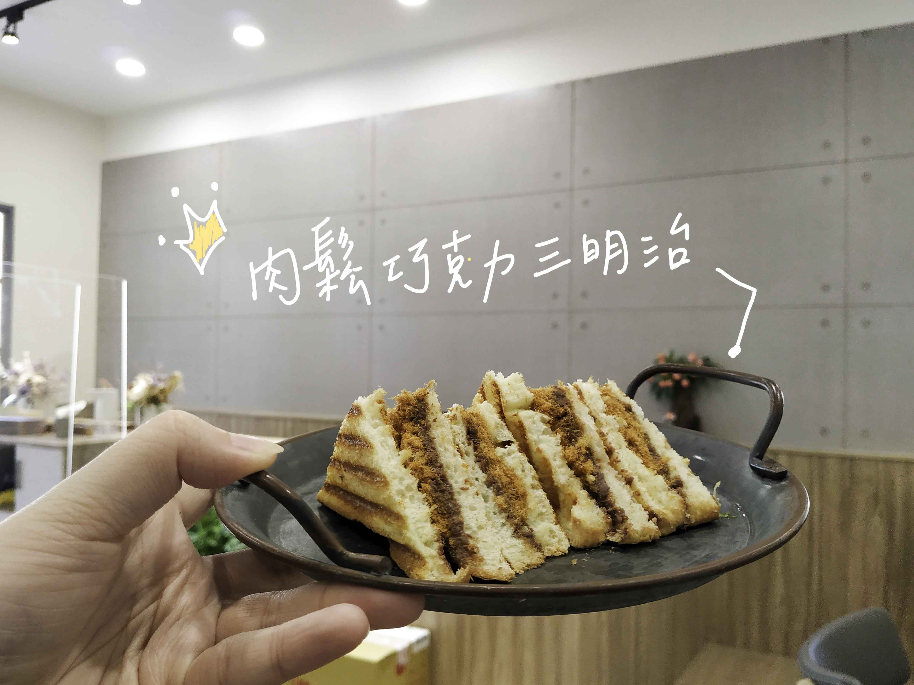
接下來要介紹的是
🍫肉鬆巧克力三明治 💰45
這個真的超推 來吃的必點我覺得
完全中了我的口味 真的很愛這種鹹甜的口感
真的很難以描述 但是真的想不到這兩個這麼搭
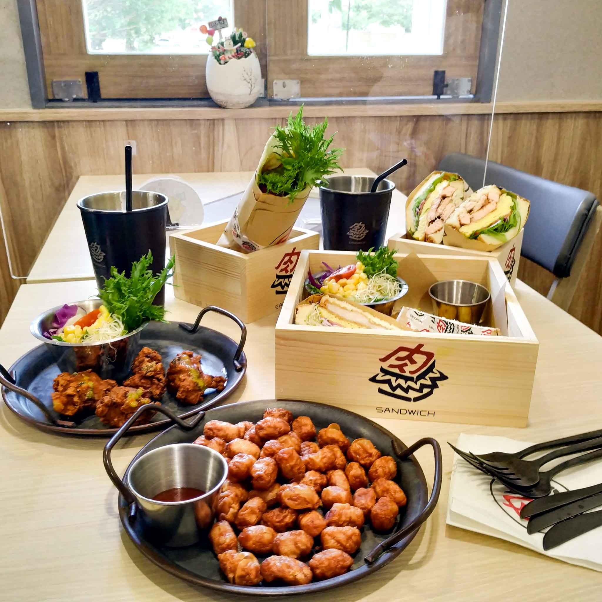
這些是同行的朋友點了 覺得拍起來很豐盛哈哈
所以就一起放上來 但是因為沒吃便不多做評論
不管在不在新竹 路過時別忘了順便帶走一份肉鬆巧克力三明治唷
btw雖然是朋友的店但是我是認真真心推薦的 而且我是有付錢的唷！
不過總覺得吃下來比想像中便宜哈哈(不知道是不是台北待久了哭哭)
詳細資訊
肉sandwich新竹店時間⏰:週二～週五 07:00~15:00;假日 08:00~15:00
肉sandwich新竹店電話📞:0972459758
肉sandwich新竹店位置🏠:新竹市東區世界街91號 點我看GOOGLE地圖
肉sandwich新竹店臉書:點我看臉書